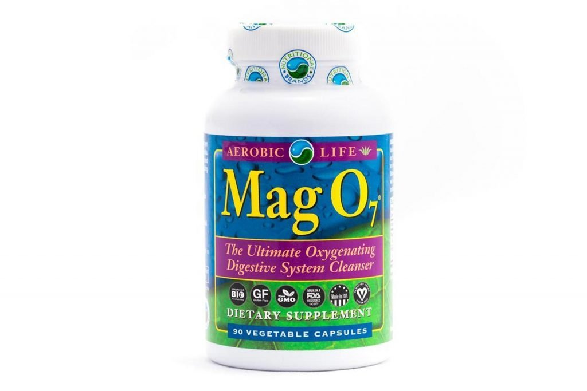

The Best Trader Joe's Products For Weight Loss
2020.12.07 12:17

msn back to msn home lifestyle powered by Microsoft News Skip To Navigation Skip To Content Skip To Footer Sign in Change language & content: Afrique francophone (français) América Latina (español) Argentina (español) Australia (English) België (Nederlands) Belgique (français) Brasil (português) Canada (English) Canada (français) Česká republika (čeština) Chile (español) Colombia (español) Danmark (Dansk) Deutschland (Deutsch) España (español) France (français) India (English) India (मराठी) India (हिंदी) India (বাংলা) India (తెలుగు) Indonesia (Bahasa Indonesia) International Edition (English) Ireland (English) Italia (italiano) Magyarország (magyar) Malaysia (English) México (español) Nederland (Nederlands) New Zealand (English) Norge (norsk, bokmål) Österreich (Deutsch) Perú (español) Philippines (English) Polska (polski) Portugal (Português) Schweiz (Deutsch) Singapore (English) South Africa (English) Suisse (français) Suomi (suomi) Sverige (svenska) Türkiye (Türkçe) United Arab Emirates (English) United Kingdom (English) United States (English) United States (español) Venezuela (español) Việt Nam (Tiếng Việt) Ελλάδα (ελληνικά) Россия (Pусский) ישראל (עברית) الإمارات العربية المتحدة (العربية) المملكة العربية السعودية (العربية) مصر (العربية) ไทย (ไทย) 한국 (한국어) 中华人民共和国 (简体中文) 台灣 (繁體中文) 日本 (日本語) 香港特别行政區 (繁體中文) Switch to Latino (Español) Feedback Help en Choose a language United States (English) - en United States (español) - es
lifestyle
Today Coronavirus Health News Weight Loss Fitness Nutrition Mental Health & Self-Care Wellness MedicalMore
News Weather Coronavirus News Election 2020 Entertainment Sports esports Money Lifestyle Shopping Food & Drink Travel Autos Video Kids AdChoicesThe Best Trader Joe s Products For Weight Loss
Olivia Tarantino 8/11/2020 SHARE SHARE TWEET SHARE EMAIL COVID-19 lockdowns, Pearl Harbor Remembrance Day, two missing in Alaska: 5 things to know Monday Sinovac aims for 600 million dose capacity for COVID vaccine 39 Gifts That Are Selling Like Hotcakes During The Holidays Ad Microsoft Top credit card wipes out interest until 2022 (seriously) Ad Microsoft The 23 Hottest Gifts of 2020 Ad Microsoft Full screen 1/23 SLIDES © Provided by Eat This, Not That!The Best Trader Joe's Products For Weight Loss
We know the popular supermarket chain avoids marketing their products, and that may be why countless hidden health gems secretly lurk on TJ's shelves. We're here to uncover them for you with our ultimate Trader Joe's shopping list.
What makes the chain's private label so impressive? It's the fact that the discount supermarket develops its products to fit high-quality standards. Every product is free of artificial flavors, artificial preservatives, artificial colors, MSG, added trans fats, dairy ingredients from cows injected with rBST hormones, and genetically modified ingredients (GMO-free)—all things that tend to make foods a "Not That!".
Those high standards make Trader Joe's products an impressive alternative to pricier specialty stores. And because the chain is always on top of food trends and health news, they're continually introducing new products. That's why we've rifled through to find the best weight loss foods Trader Joe's has to offer. These aren't too-good-to-be-true deals: you really can get healthy must-haves on the cheap. So take this list with you next time you go grocery shopping .
And for more grocery shopping tips, be sure to sign up for our newsletter !
Microsoft may earn an Affiliate Commission if you purchase something through recommended links in this article. 2/23 SLIDES © Provided by Eat This, Not That!1. Organic Herbal Flavored Waters
Per 1 container : 0 calories, 0 g fat, 0 mg sodium, 0 g carbs, 0 g protein
If you're addicted to drinking detox water, Trader Joe's is here to make your routine a little easier. Instead of shoving fruit slices into your water bottle, now you can simply pick up a calorie-free Herbal Flavored Water at the store. With no sugar added, these lemon ginger and lemongrass spearmint drinks are made up only of purified water and organic extracts. One look at the nutrition label, and you'll know you're getting a lot of added flavor without any added consequence.
Here's What Happens To Your Body When You Drink Lemon Water Every Day .
Microsoft may earn an Affiliate Commission if you purchase something through recommended links in this article. 3/23 SLIDES © Provided by Eat This, Not That!2. Cauliflower Pizza Crust
Per 1/6 crust : 80 calories, 0 g fat, 220 mg sodium, 17 g carbs (1 g fiber, < 1 g sugar), 1 g protein
You may be gluten-free or just looking to cut carbs, but either way, you're going to wish Trader Joe's had released cauliflower pizza crust sooner. This gem clocks in at just 80 calories a slice, and you can thank the pizza's base for that. While most crusts of this kind are held together with eggs or cheese, Trader Joe's uses cornstarch, potato starch, olive oil, and sea salt to keep theirs together. The nutty, riced cauliflower will be great at absorbing the flavors in the ingredients around it, so the sky's the limit when it comes to toppings. You can pile them on without piling on the pounds!
For even more cauliflower goodies, check out our list of 15 Great Cauliflower Products That Will Improve Your Diet .
Microsoft may earn an Affiliate Commission if you purchase something through recommended links in this article. 4/23 SLIDES © Provided by Eat This, Not That!3. Mashed Cauliflower
Per 1 cup : 50 calories, 2 g fat (1 g saturated fat), 270 mg sodium, 7 g carbs (2 g fiber, 3 g sugar), 2 g protein
Cauliflower chunks and bits team up in this new dish for a creamy, yet textured dish that can rival any bowl of mashed potatoes with just a fraction of the carbs. Seventy percent of it is made up of the white veggie, while the rest contains recognizable ingredients like skim milk, white pepper, and rice flour. Use it as a side dish for all kinds of different meals or cook up a bigger bowl with mix-ins of your choice.
Read more: 15 Things You Never Knew About Trader Joe's
Microsoft may earn an Affiliate Commission if you purchase something through recommended links in this article. Slideshow continues on the next slide 5/23 SLIDES © Provided by Eat This, Not That!4. Organic Coconut Aminos Seasoning Sauce
Per 1 tbsp : 20 calories, 0 g fat, 300 mg sodium, 5 carbs (0 g fiber, 5 g sugar), 0 g protein
What do you get when you mix the sap from a coconut blossom with water and sea salt? Surprisingly enough, a slightly sweeter soy sauce replacement for anyone looking to cut back on their sodium intake while ingesting 13 different amino acids, all at the same time. (For reference, regular soy sauces can clock in at upwards of 900 milligrams of sodium per tablespoon!)
Microsoft may earn an Affiliate Commission if you purchase something through recommended links in this article. 6/23 SLIDES © Provided by Eat This, Not That!5. Just a Handful of Rainbow's End Trail Mix
Per 1 bag : 210 calories, 13 g fat (3 g saturated fat), 80 mg sodium, 21 g carbs (2 g fiber, 16 g sugar), 5 g protein
While this trail mix may not be new to Trader Joe's, its packaging is. Before, you'd have to dig into the bag if you wanted a snack and trust yourself to have enough self-control to stop eating once you'd reached a single serving. But now, this mix of milk chocolate candies (made with no artificial coloring), roasted and salted peanuts and almonds, and California raisins, is prepackaged into one-ounce bags. This isn't just convenient to throw in your bag, but a smart way to stop yourself from eating too much. Each serving is 210 calories, 13 grams of fat, and 16 grams of sugar after all.
Here are 7 Major Changes to Expect at Trader Joe's Moving Forward .
Microsoft may earn an Affiliate Commission if you purchase something through recommended links in this article. 7/23 SLIDES © Provided by Eat This, Not That!6. Matcha Green Tea
Per 1 can : 0 calories, 0 g fat, 15 mg sodium, 1 g carb (0 g fiber, 0 g sugar), 0 g protein
Further down on this list, you'll see that Trader Joe's recently began selling matcha green tea powder, but now they've got another option for those in a rush — cans of the stuff that you can chill and crack open with much less effort. So if you're as addicted to this trendy flavor as everyone else, adding this cheap drink to your Trader Joe's shopping list won't do any damage to your bank account or your scale. It's free of calories, sugar, and fat — talk about a triple threat.
Microsoft may earn an Affiliate Commission if you purchase something through recommended links in this article. 8/23 SLIDES © Provided by Eat This, Not That!7. Unsweetened Sunflower Seed Spread
Per 2 tbsp : 210 calories, 16 g fat (2 g saturated fat), 100 mg sodium, 4 g carbs (2 g fiber, 1 g sugar), 7 g protein
Trader Joe's original Sunflower Seed Butter only had 3 grams of sugar, but if even that small amount was enough to scare you off, try their new unsweetened version. It only has a single gram of sugar, and it comes naturally from the seeds themselves. We're going nuts for it because it's also slightly lower in sodium with the same amount of protein and a shorter ingredients list, consisting of just roasted sunflower seeds and salt.
Microsoft may earn an Affiliate Commission if you purchase something through recommended links in this article. 9/23 SLIDES © Provided by Eat This, Not That!8. Oven-Baked Cheese Bites
Per 1/2 package : 170 calories, 12 g fat (8 g saturated fat), 310 mg sodium, < 1 g carbs (0 g fiber, 0 g sugar), 15 g protein
Unlike carb-laden Cheez-Its, Trader Giotto's Oven-Baked Cheese Bites are a low-carb snacktime dream come true. Made with a blend of Grana Padano and semi-aged cheese, these crunchy little bites are boldly cheesy and jam-packed with a staggering 15 grams of protein per serving. Say hello to muscle mass and goodbye to a stalled metabolism .
Next time you're shopping, here are 18 Amazing Trader Joe's Shopping Tips to Know .
Microsoft may earn an Affiliate Commission if you purchase something through recommended links in this article. Slideshow continues on the next slide 10/23 SLIDES © Provided by Eat This, Not That!9. Oatmeal Cups
Strawberry Raspberry Oatmeal Cup
Per 1 container : 220 calories, 3.5 g fat (0.5 g saturated fat), 0 mg sodium, 38 g carbs (6 g fiber, 5 g sugar), 9 g protein
Tart Cherry Chia Oatmeal Cup
Per 1 container : 230 calories, 6 g fat (1 g saturated fat), 80 mg sodium, 36 g carbs (6 g fiber, 6 g sugar), 9 g protein
Take one glance at our list of best and worst instant oatmeals and you'll see how impressive these oatmeal cups are. Not only are they low in sugar, but they're high in fiber and protein, two macronutrients that have some serious staying power. Eat one, and you won't be constantly watching the clock waiting for lunchtime.
Microsoft may earn an Affiliate Commission if you purchase something through recommended links in this article. 11/23 SLIDES © Provided by Eat This, Not That!10. Mixed Nut Butter
Per 2 tbsp : 190 calories, 18 g fat (2.5 g saturated fat), 35 mg sodium, 7 g carbs (2 g fiber, 1 g sugar), 5 g protein
Why settle for one nut butter when you can reap the benefits of several in one jar? Each nut provides different health benefits: According to a study printed in The Journal of the International Society of Sports Nutrition , almonds can help you burn more fat and carbs during workouts thanks to being rich in the amino acid L-arginine; walnuts are one of the best sources of anti-inflammatory omega-3 fatty acids; and just a single Brazil nut contains your daily recommended intake of selenium, a micronutrient that helps you maintain metabolism health. Besides essentially acting like a multivitamin, this spread has no added sweeteners and no added oils, unlike some of the worst nut butters .
Microsoft may earn an Affiliate Commission if you purchase something through recommended links in this article. 12/23 SLIDES © Provided by Eat This, Not That!11. Organic King Coconut Water
Per container : 45 calories, 0 g fat, 95 mg sodium, 11 g carbs (0 g fiber, 8 g sugar), 1 g protein
There's only one ingredient in this coconut water: coconut water. It doesn't sound surprising, but compared to what other brands tend to add to their containers (including emulsifiers, stabilizers, and sugar), it's actually quite impressive. Even better: TJ's keeps the sugar count per serving to a mere 8 grams—which is a whopping 40% lower than leading brands. We love sipping on coconut water after workouts as an alternative to sugary sports beverages since it's teeming with the hydrating and muscle-soothing electrolyte potassium.
Microsoft may earn an Affiliate Commission if you purchase something through recommended links in this article. 13/23 SLIDES © Provided by Eat This, Not That!12. Chicken Burrito Bowl
Per bowl : 380 calories, 11 g fat (4 g saturated fat), 560 mg sodium, 54 g carbs (10 g fiber, 3 g sugar), 22 g protein
This hearty bowl of seasoned chicken breast, brown rice, red quinoa, black beans, corn, bell peppers, and cheddar cheese is the late-night worker's dream. The smoky southwestern-style meal is well-rounded—with 22 grams of protein and an excellent 10 grams of fiber—and will help you meet all of your better-body goals. Add it to your Trader Joe's shopping list pronto.
Love their frozen foods? Here are 15 Recipes That Start with Trader Joe's Frozen Foods .
Microsoft may earn an Affiliate Commission if you purchase something through recommended links in this article. 14/23 SLIDES © Provided by Eat This, Not That!13. Matcha Green Tea
Per packet : 5 calories, 0 g fat, 0 mg sodium, 0 g carbs, 0 g protein
Looking to fry belly flab? You've come to the right place. Matcha green tea is a primo source of EGCG, a powerful antioxidant that research has shown to boost metabolism and promote the release of lipids from fat cells. Add a packet to a cup of warm water, or steep it cold for a refreshing drink.
Microsoft may earn an Affiliate Commission if you purchase something through recommended links in this article. Slideshow continues on the next slide 15/23 SLIDES © Provided by Eat This, Not That!14. Organic Toasted Coconut Granola
Per 1/3 cup : 130 calories, 5 g fat (3 g saturated fat), 50 mg sodium, 18 g carbs (2 g fiber, 6 g sugar), 3 g protein
This granola is made from a blend of rolled oats, coconut flakes, roasted almonds, and quinoa, all bound together with a light layer of coconut oil and touch of cane sugar. For a generous ⅓ cup serving, you're only consuming 6 grams of sugar, which is fairly low considering some brands pack in upward of 12 grams.
Microsoft may earn an Affiliate Commission if you purchase something through recommended links in this article. 16/23 SLIDES © Provided by Eat This, Not That!15. Organic Chocolate Chip Chewy Granola Bars
Per 1 bar : 100 calories, 2.5 g fat (1 g saturated fat), 10 mg sodium, 18 g carbs (1 g fiber, 8 g sugar), 2 g protein
Looking for a snack that will satisfy your hunger pangs without sending your blood sugar through the roof? Allow us to introduce you to your snacking savior. It has just the right amount of carbs to give your brain the energy boost it needs without flooding your system with sugar. Snacking helps to maintain your blood sugar levels throughout the day, which keeps you from overeating out of starvation at your next meal.
Microsoft may earn an Affiliate Commission if you purchase something through recommended links in this article. 17/23 SLIDES © Provided by Eat This, Not That!16. Simply Nutty Bars
Per 1 bar : 200 calories, 16 g fat (2.5 g saturated fat), 100 mg sodium, 14 g carbs (7 g fiber, 5 g sugar), 7 g protein
Have an afternoon sweet tooth? Simply Nutty Bars a great way to get in your chocolate fix without completely overdoing it. Plus, between the nuts and the seeds, this bar provides a great amount of fiber that can easily increase your daily fiber intake.
Microsoft may earn an Affiliate Commission if you purchase something through recommended links in this article. 18/23 SLIDES © Provided by Eat This, Not That!17. Hold The Cone Chocolate Ice Cream Cones
Per 1 cone : 70 calories, 3 g fat (2.5 g saturated fat), 10 mg sodium, 9 g carbs (0 g fiber, 5 g sugar), 0.25 g protein
Portion control never looked so cute! These Hold The Cone ice cream cones are only 70 calories per and keep the sugars down to a mere 5 grams. They are the perfect fix for your sweet tooth at night, and will leave you feeling satisfied without totally overdoing it on a "normal" sized cone.
We love that these are portion-controlled, especially since this is What Eating an Entire Pint of Ice Cream Does to Your Body .
Microsoft may earn an Affiliate Commission if you purchase something through recommended links in this article. 19/23 SLIDES © Provided by Eat This, Not That!18. Frozen Turkey Meatballs
Per 2 meatballs : 100 calories, 5 g fat (2 g saturated fat), 400 mg sodium, 5 g carbs (2 g fiber, 1 g sugar), 12 g protein
Lean out your spaghetti and meatball dinner with these frozen, fully-cooked turkey meatballs! Top them on a plate of zucchini "zoodles" or a bed of lettuce with your favorite low-calorie tomato sauce for an easy (and low-carb) weeknight meal.
Microsoft may earn an Affiliate Commission if you purchase something through recommended links in this article. 20/23 SLIDES © Provided by Eat This, Not That!19. Frozen Tuna Burgers
Per 1 burger : 150 calories, 7 g fat (2.5 g saturated fat), 290 mg sodium, 4 g carbs (0 g fiber, 0.5 g sugar), 18 g protein
For an instant boost of protein, turn to these frozen tuna burgers! Top them with slices of avocado, fresh vegetables, and a whole wheat bun for an easy weeknight dinner.
Microsoft may earn an Affiliate Commission if you purchase something through recommended links in this article. 21/23 SLIDES © Provided by Eat This, Not That!20. Cauliflower Cheese Pizza
Per 1/3 pizza : 250 calories, 12 g fat (7 g saturated fat), 490 mg sodium, 24 g carbs (3 g fiber, 3 g sugar), 14 g protein
Don't feel like making a pizza with that cauliflower crust? Just buy this cheese pizza instead. You can eat 1/3 of the pizza for only 250 calories!
Microsoft may earn an Affiliate Commission if you purchase something through recommended links in this article. 22/23 SLIDES © Provided by Eat This, Not That!21. Grilled Chicken Breast
Per 4 oz : 130 calories, 4.5 g fat (1.5 g saturated fat), 630 mg sodium, 0 g carbs (0 g fiber, 0 g sugar), 27 g protein
This grilled chicken breast makes throwing together salads, sandwiches, and grain bowls that much easier.
Microsoft may earn an Affiliate Commission if you purchase something through recommended links in this article. 23/23 SLIDES © Provided by Eat This, Not That!22. Black Bean Rotini
Per 3/4 cup : 200 calories, 1.5 g fat (0 g saturated fat), 0 mg sodium, 35 g carbs (15 g fiber, 2 g sugar), 14 g protein
Need an easy boost of fiber? Swap out your usual pasta and turn to this black bean rotini instead! 3/4 cup gives you a whopping 15 grams of fiber a day.
Read more: The 32 Best and Worst Frozen Foods at Trader Joe's
Microsoft may earn an Affiliate Commission if you purchase something through recommended links in this article. 23/23 SLIDES SHARE SHARE TWEET SHARE EMAIL 1/23 SLIDES Next Slide AdChoices 1 2 3 4YOU MAY LIKE
Ad Microsoft 39 Gifts That Are Selling Like Hotcakes During The Holidays Your Top Deals Today Top credit card wipes out interest until 2022 (seriously) The Ascent The 23 Hottest Gifts of 2020 Gadgets PostMore from Eat This, Not That!
The Unhealthiest Yogurts for Weight Loss
What Happens to Your Body When You Eat Potatoes
35 Bizarre McDonald s Items from Around the World
Visit site Feedback © 2020 Microsoft Privacy & Cookies Terms of use About our Ads Help Newsletter MSN Worldwide Disclaimer About Health MSN Blog About Us Editorial StandardsFound the story interesting?
Like us on Facebook to see similar stories
I'm already a fan, don't show this againSend MSN Feedback
We appreciate your input!
How can we improve?Please give an overall site rating:
Submit Close Privacy Statement Help Help & Support- Weight Loss? Easy! The Best Supplements to Keep Fit ...
- 12 Popular Weight Loss Pills and Supplements Reviewed
- 13 best Patanjali Products for weight loss (With Price)
- Weight Loss: Buy Weight Loss Products Online At Best ...
- Amazon.com: Weight Loss: Health & Household: Supplements ...
- Shark Tank Weight Loss Products 2020: What's Real and What ...
- Top 10 Weight Loss Products On Amazon (Of ALL TIME ...
- Dietary supplements for weight loss - Mayo Clinic
- 11 Supplements and Herbs for Weight Loss Explained - WebMD
- 10 BEST Weight-Loss Products That Actually Work | TDE
- Weight Loss? Easy! The Best Supplements to Keep Fit ...
A safe and effective way to lose weight is always going to be in demand. This is a guide to the various weight loss products that have been featured on Shark Tank. As always, our goal is for you to make informed and safe choices when buying health products.
- 12 Popular Weight Loss Pills and Supplements Reviewed
TruVision Health Weight Loss: Order TruVision weight loss combo. TruVision Health trufix and trucontrol sample. Buy TruVision. Lose avg. 4-7 lbs in the 1st week. New Truvy products.
- 13 best Patanjali Products for weight loss (With Price)
2019 Best Weight Loss Products. Though I’m still on my weight loss journey and have about another 30 pounds to lose, I am 30 pounds below my max weight of nearly 200 pounds.No, that doesn’t make me a weight loss expert, but I do feel like I know at least a little about what is truly helpful and what is not.Especially for those of us who have problems committing long-term to workout plans ...
- Weight Loss: Buy Weight Loss Products Online At Best ...
Buy Weight Loss Supplements online at Chemist Warehouse and enjoy huge discounts across the entire range. Shop products online or in store today. Exclusive Offers And Big Savings Delivered to your inbox! sign up. Required field. Invalid email address. Please try again. There was an issue. Please reload the page try again.
- Amazon.com: Weight Loss: Health & Household: Supplements ...
The average weight loss in the supplement group was 4.2 pounds (1.9 kilograms). The average weight loss in the placebo group was 0.9 pounds (0.4 kilograms). While these results are intriguing, the fact that the trial was small and lasted only eight weeks means the results can't be reliably generalized to real-world situations.
- Shark Tank Weight Loss Products 2020: What's Real and What ...
The low levels of fat and carbohydrates in the best protein powders makes them one of the best weight loss products that actually work. Dog. Me and my girlfriend recently got a dog. What a great way to get your ass off the couch! Since I care a lot about our dog I feel that I have to get out on long walks, for the dog’s sake.
- Top 10 Weight Loss Products On Amazon (Of ALL TIME ...
There are many different weight loss solutions out there. This includes all sorts of pills, drugs and natural supplements. These are claimed to help you lose weight, or at least make it easier to ...
- Dietary supplements for weight loss - Mayo Clinic
The Best Trader Joe's Products For Weight Loss We know the popular supermarket chain avoids marketing their products, and that may be why countless hidden health gems secretly lurk on TJ's shelves.
- 11 Supplements and Herbs for Weight Loss Explained - WebMD
Since weight loss is a function of burning more calories than your body absorbs, a weight loss pill can tackle one or both of these potential avenues to generate weight loss. Weight loss pills are great for people on a diet, as they are a natural compliment to an exercise and diet-focused weight loss program .
- 10 BEST Weight-Loss Products That Actually Work | TDE
Shop Weight Management. Should you take a weight loss supplement every day? The best way to use weight loss supplements is to take them every day as directed for a short period of time (2-6 weeks). You should only need the extra support of these products when you are looking for that final boost for your fat loss diet.
A safe and effective way to lose weight is always going to be in demand. This is a guide to the various weight loss products that have been featured on Shark Tank. As always, our goal is for you to make informed and safe choices when buying health products.
TruVision Health Weight Loss: Order TruVision weight loss combo. TruVision Health trufix and trucontrol sample. Buy TruVision. Lose avg. 4-7 lbs in the 1st week. New Truvy products.
2019 Best Weight Loss Products. Though I’m still on my weight loss journey and have about another 30 pounds to lose, I am 30 pounds below my max weight of nearly 200 pounds.No, that doesn’t make me a weight loss expert, but I do feel like I know at least a little about what is truly helpful and what is not.Especially for those of us who have problems committing long-term to workout plans ...
Buy Weight Loss Supplements online at Chemist Warehouse and enjoy huge discounts across the entire range. Shop products online or in store today. Exclusive Offers And Big Savings Delivered to your inbox! sign up. Required field. Invalid email address. Please try again. There was an issue. Please reload the page try again.
The average weight loss in the supplement group was 4.2 pounds (1.9 kilograms). The average weight loss in the placebo group was 0.9 pounds (0.4 kilograms). While these results are intriguing, the fact that the trial was small and lasted only eight weeks means the results can't be reliably generalized to real-world situations.
The low levels of fat and carbohydrates in the best protein powders makes them one of the best weight loss products that actually work. Dog. Me and my girlfriend recently got a dog. What a great way to get your ass off the couch! Since I care a lot about our dog I feel that I have to get out on long walks, for the dog’s sake.
There are many different weight loss solutions out there. This includes all sorts of pills, drugs and natural supplements. These are claimed to help you lose weight, or at least make it easier to ...
The Best Trader Joe's Products For Weight Loss We know the popular supermarket chain avoids marketing their products, and that may be why countless hidden health gems secretly lurk on TJ's shelves.
Since weight loss is a function of burning more calories than your body absorbs, a weight loss pill can tackle one or both of these potential avenues to generate weight loss. Weight loss pills are great for people on a diet, as they are a natural compliment to an exercise and diet-focused weight loss program .
Shop Weight Management. Should you take a weight loss supplement every day? The best way to use weight loss supplements is to take them every day as directed for a short period of time (2-6 weeks). You should only need the extra support of these products when you are looking for that final boost for your fat loss diet.
